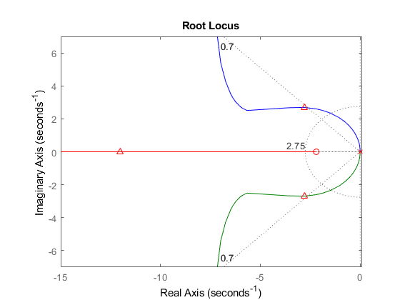
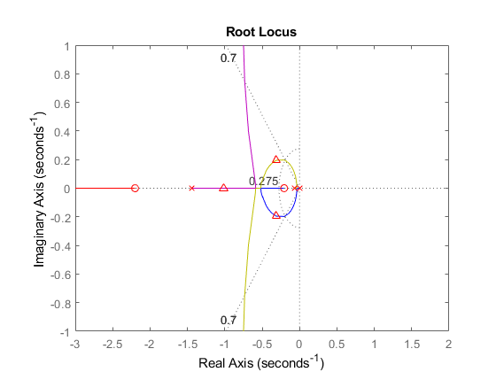

Contents
clc; close all;
Horizontal Dynamics
Theta2Z_num = [P.g];
Theta2Z_den = [1, P.mu/(P.mc + 2*P.mr), 0];
Theta2Z = tf(Theta2Z_num,Theta2Z_den)
Tau2Th_num = [1];
Tau2Th_den = [(P.Jc + 2*P.mr*P.d^2), 0, 0];
Tau2Th = tf(Tau2Th_num,Tau2Th_den)
Theta2Z =
9.81
---------------
s^2 + 0.06667 s
Continuous-time transfer function.
Tau2Th =
1
----------
0.0492 s^2
Continuous-time transfer function.
Inner Loop Design
zth = wnth*.8;
pth = zth*8;
Th_num = [1/zth 1];
Th_den = [1/pth 1];
ThC = tf(Th_num,Th_den)
InnerSys = ThC*Tau2Th
Kth = .505;
figure()
rlocus(InnerSys)
hold on
rlocus(InnerSys,Kth,'r^')
grid on
sgrid([zeta zeta],[wnth 1000])
xlim([-15,.1])
ylim([-7,7])
ThC =
0.4545 s + 1
-------------
0.05682 s + 1
Continuous-time transfer function.
InnerSys =
0.4545 s + 1
-------------------------
0.002795 s^3 + 0.0492 s^2
Continuous-time transfer function.

Outer Loop Design
Thr2Th_num = [Kth/zth, Kth];
Thr2Th_den = [(P.Jc + 2*P.mr*P.d^2)/pth, (P.Jc + 2*P.mr*P.d^2), Kth/zth, Kth];
Thr2Th = tf(Thr2Th_num,Thr2Th_den)
Thr2Th = minreal(Thr2Th)
zz = wnz*.75;
pz = zz*7;
ZC_num = [1/zz 1];
ZC_den = [1/pz 1];
ZC = tf(ZC_num,ZC_den)
OuterSys = ZC*Thr2Th*Theta2Z;
OuterSys = minreal(OuterSys)
Kz = .00872;
figure()
rlocus(OuterSys)
hold on
rlocus(OuterSys,Kz,'r^')
grid on
sgrid([zeta zeta],[wnz 1000])
xlim([-3,2])
ylim([-1,1])
Thr2Th =
0.2295 s + 0.505
--------------------------------------------
0.002795 s^3 + 0.0492 s^2 + 0.2295 s + 0.505
Continuous-time transfer function.
Thr2Th =
82.11 s + 180.7
--------------------------------
s^3 + 17.6 s^2 + 82.11 s + 180.7
Continuous-time transfer function.
ZC =
4.848 s + 1
------------
0.6926 s + 1
Continuous-time transfer function.
OuterSys =
5639 s^2 + 1.357e04 s + 2559
-------------------------------------------------------------
s^6 + 19.11 s^5 + 108.8 s^4 + 306.4 s^3 + 280.8 s^2 + 17.39 s
Continuous-time transfer function.
